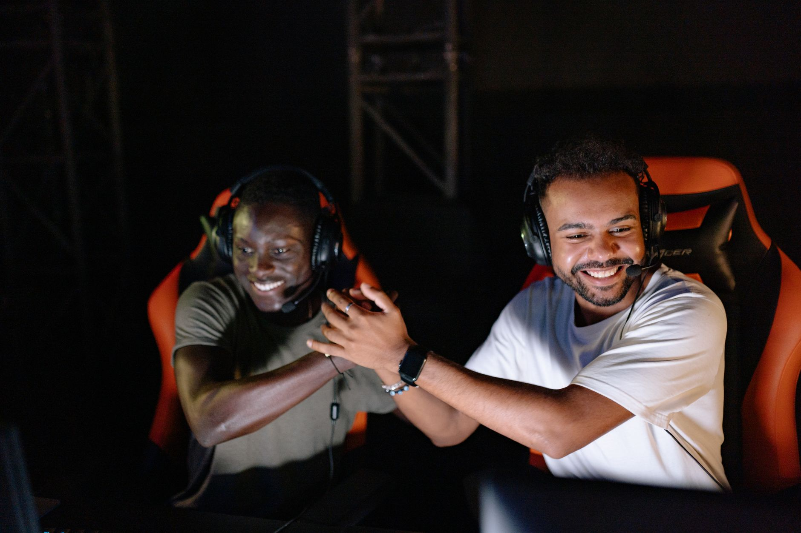

A dominant display in Bucharest
The competitive landscape of Counter-Strike has been shaken by the recent performance of FUT at the ongoing tournament in Bucharest. In a highly anticipated matchup, FUT faced off against the legendary Team Liquid, a squad known for its tactical depth and individual brilliance. However, the narrative of the day was written entirely by the disciplined execution and rapid-fire aggression displayed by the FUT roster.
Moving to a 2-0 record in the group stages, FUT has proven that they are not just participants in this event, but genuine contenders for the trophy. The match was characterized by intense firefights and strategic utility usage that left Liquid struggling to find their rhythm. For fans of high-stakes esports, this victory serves as a loud statement regarding the shifting power dynamics in the professional scene.
Breaking down the match mechanics
The victory was not a product of luck but rather a result of superior map control and economic management. Throughout both maps, FUT demonstrated an uncanny ability to read Liquid's rotations, often setting up perfect crossfires that neutralized Liquid's star players. This level of coordination is what separates the elite tier from the rest of the competition.
Team Liquid, on the other hand, appeared caught between two worlds. They attempted to play a slow, methodical game, but the sheer pace of FUT's offensive pushes forced them into uncomfortable situations. By the time Liquid tried to adjust their defensive setups, FUT had already established a lead that proved too daunting to overcome.
The impact on the tournament standings
With this 2-0 sweep, FUT has effectively secured a comfortable position heading into the next phase of the tournament. Their ability to win decisively against a tier-one organization like Liquid provides them with immense psychological confidence. They are no longer the underdogs; they are the team everyone wants to avoid in the bracket.
Winning against a team with the history and caliber of Liquid is a testament to the hard work this roster has put in behind the scenes.
For Team Liquid, the loss is a significant setback. They now face a much narrower margin for error in their upcoming matches. To stay in the running for the championship, they will need to undergo immediate tactical revisions and find a way to stabilize their defensive structures, which crumbled under the weight of FUT's relentless pressure.
Key takeaways for esports analysts
Analysts watching the Bucharest tournament have noted several trends emerging from this specific matchup. The most prominent is the rise of aggressive, proactive playstyles over the traditional, reactive defensive setups. FUT's success suggests that in the current meta, being the aggressor can often dictate the pace of the game more effectively than waiting for the opponent to make a mistake.
As the tournament progresses, we expect to see other teams attempting to replicate the high-tempo style used by FUT. However, replicating such seamless coordination is difficult, and teams that fail to balance aggression with defensive stability will likely find themselves facing the same fate as Liquid.
Looking ahead to the next rounds
FUT's journey in Bucharest is far from over, and the expectations for them have skyrocketed. They will likely face tougher opposition in the playoffs, but their current form suggests they are ready for any challenge. The question is whether they can maintain this level of intensity across multiple days of grueling competition.
It is worth noting that this isn't the first time we have seen this level of dominance from this squad. If you missed our previous coverage, you should check out our deep dive on how FUT Dominates TYLOO with 2-0 Victory at PGL Bucharest to see the patterns of success that are starting to emerge. Their ability to dismantle different styles of play is becoming their trademark.
As we move closer to the grand finals, all eyes will be on the Bucharest stage. Will FUT continue their perfect run, or will another contender rise to stop their momentum? One thing is certain: the esports world is watching closely.
See Also
If you enjoyed this Esports News article, check out FUT Dominates TYLOO with 2-0 Victory at PGL Bucharest for more useful reading.